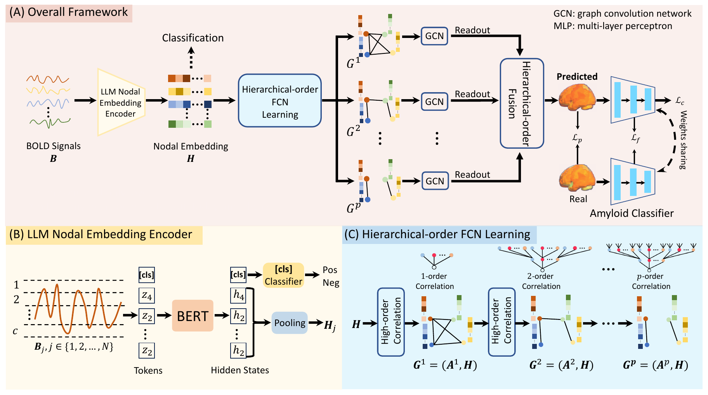
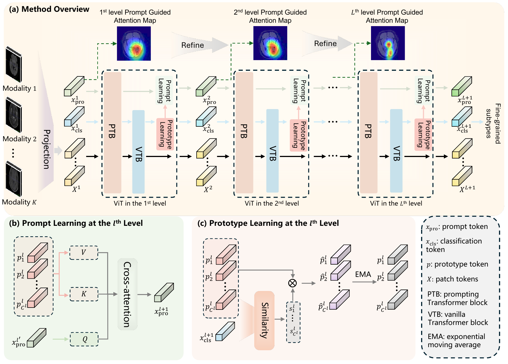
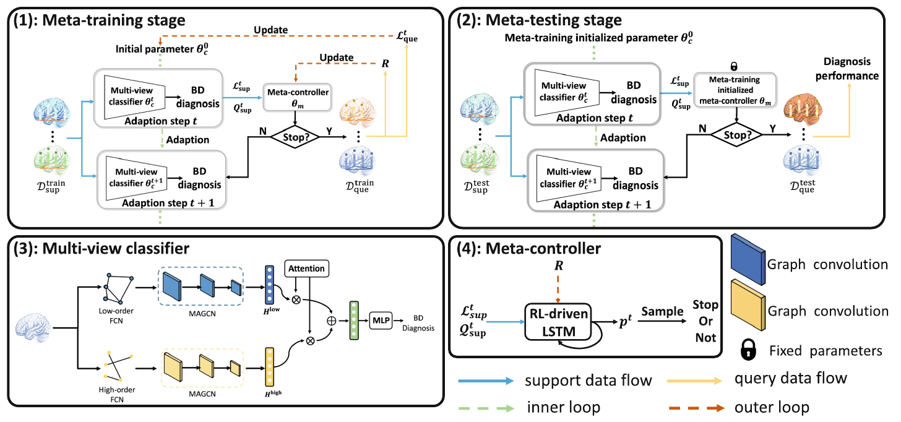
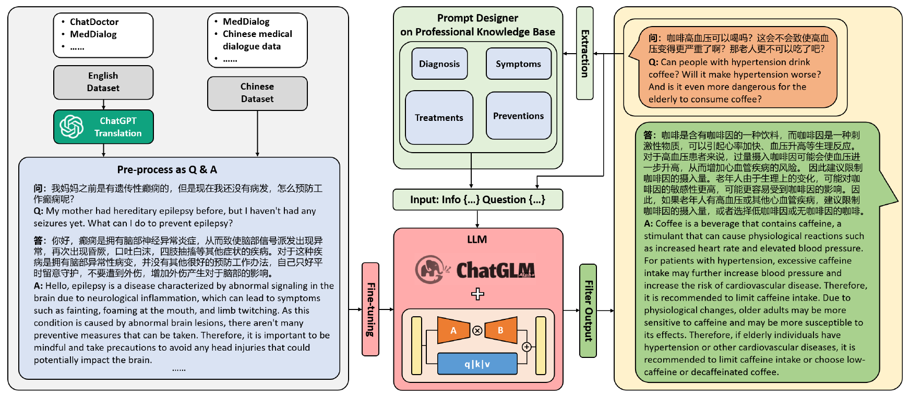

Research interests
From disease-related brain representations to adaptable models and medical language systems.
Brain networks & Alzheimer’s disease
How can functional brain information support the characterization of AD?
I study task-oriented representations of resting-state fMRI, including low- and high-order functional connectivity, for cognitive impairment identification and amyloid-β prediction.

Structured & transferable learning
How can models learn across diagnostic levels, diseases, and datasets?
My work explores hierarchical prompts, disease-specific prototypes, and adaptive graph meta-learning, with an emphasis on multi-center evaluation and learning from limited samples.


Medical language models & agents
How can language models be adapted to medical research and applications?
Through DoctorGLM and my industry internship, I have worked on medical model training and brain-disease-related agent development, connecting research with engineering practice.

Open-source collaboration · 2023
DoctorGLM
A Chinese medical dialogue model based on ChatGLM-6B and an early open-source exploration of medical language modeling.
My contribution: participated in model training; co-author of the associated arXiv preprint.
Read the publicationResearch approach
Across these directions, I am interested in representations that reflect disease-related structure, evaluation across datasets, and the relationship between methodological advances and practical medical AI applications.
My research connects computational modeling with questions about neurodegeneration, cognitive impairment, and the generalization of brain disorder models. The work ranges from functional connectivity networks to medical image representations and language systems.
See my publications for the corresponding methods and experimental studies.